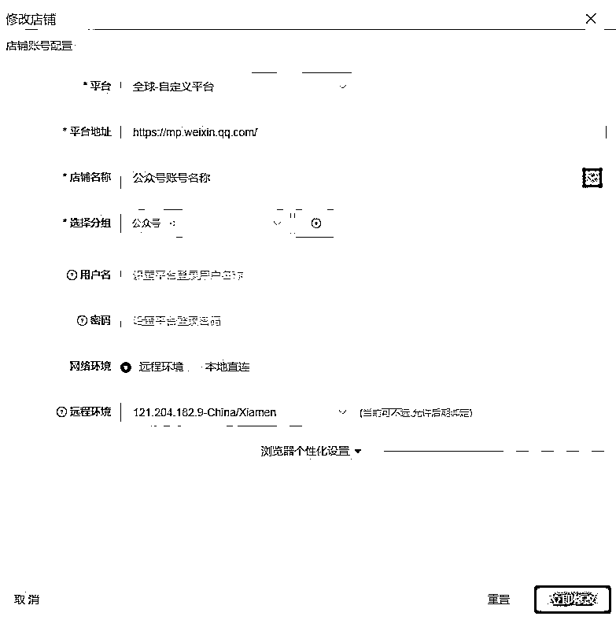

公众号爆文全自动化代码分享
来源：https://tjhy5ng53f.feishu.cn/docx/EaSSd0KJsoHDysxItnFc3xsgnAh
大家好，我是毛韩，第五期圈友，编号21985。
上一次分享公众号爆文的复盘，收获了不少圈友的点赞和鼓励，在此感谢大家的认可。
同时，也有不少圈友希望能用到我写的全自动化软件，于是我花了两天时间，将软件代码全部解耦，并编写了现在这个使用文档，希望能给还在做公众号爆文的圈友们提供一些帮助。
注意，因为代码量比较多且繁杂（屎山）所以脚本配置起来比较费时间。
对于有编程经验的圈友来说，整套配置下来需要2h
对于无编程经验的圈友来说，可能5h以上
整套脚本配置分为三个部分：
- Python代码部分：爬取对标账号文章并使用GPTAPI生成文章、存入本地文件夹
- 飞书部分：整套脚本的控制中心，包括各项参数调整、收益计算等
- 影刀部分：控制悦互联浏览器，负责从本地文件夹将文章发布到公众号平台
文档分为三个部分的教程：
- 配置环境
- 修改参数
- Q&A（后面圈友遇到问题后，会实时更新到此）
1、配置环境
- 下载Python自动生成脚本
- 下载影刀脚本
- 下载悦互联浏览器https://kj.chinafic.com
- 配置环境
- 下载Python（自行百度）
- 安装Python包（如何安装自行百度）
- pip install openai
- pip install requests
- pip install selenium
- pip install beautifulsoup4
- pip install python-docx
- pip install pillow
- 复制飞书文档模板
- 点击打开
- 右上角点击创建副本
- 创建飞书应用并配置到表格中（自行百度）
- 参考教程：https://open.feishu.cn/community/articles/7298446935350231044
- 创建本地文件夹
- 在本地创建文件夹，并和Python->main.py->#16行对应（尽量和我一样使用D:\BaiduSyncdisk\文章存档，减少出错率）
- 每个领域文件夹中要再新建三个文件夹，分别是：爆文文章、待发布、历史文章
2、修改参数
- 在Python文件中，搜索Todo，将所有带有Todo标识的参数全都改成你自己的（Todo后面有写要填写的内容）
- 同样的，在影刀RPA脚本中，一样需要搜索Todo、按照提示将参数填写进去
- 在飞书表格->账号配置中，修改配置
- 账号名称：公众号名称
- 平台：默认公众号
- 领域：要和本地文件夹中的领域以及「素材配置」文档页的领域相对应，否则会出错；
- 天数：（公式）无需更改但不可删除
- 主体：无需在意，不可删除
- 启动日期：该账号的发布第一篇的日期，无需在意但不可删除
- 更新日期：默认为昨天。如果是今天，则脚本会认为今天已经发过文章了，不再重复发送。如果非今天，则会启动发布
- 发布数量：每次发布的发布数量，最高数为8，也就是公众号一次最多发8篇文章
- 发布次数：每天发布几次文章，没有上限。但该账号当天总发布文章数为（发布次数x发布数量）
- 爆文重发：默认为1，如果该账号过去x天内有爆文，且符合素材配置文档中的领域规则，且爆文重发=1时，会优先使用此前的爆文重复发布，如果爆文数量数量不够再补充新文章。如果爆文重发为0则代表当天已经发过爆文。
- 公益广告。用于和「自动关闭公益广告RPA配合」关闭后可提升CPM。如果为1则代表已关闭、为0代表未关闭。
- 总收益、月度收益、每天收益，用于统计每个账号及总收益情况。可使用「自动查询收益」RPA获取收益
- 在飞书表格->素材配置中，修改配置
- 领域名称：和账号配置中的领域相对应
- 排序/阅读量/时间/是否原创/易撰领域，等参数均为易撰上的参数，不使用易撰素材可不用填写
- RPAing，填写「教育ing」的表格ID
- Prompt，填写「教育APIpro」的表格ID
- 原创发布分类，填写公众号发布时，选择的领域第一分类（现已弃用但不可删除）
- 原创发布子分类，同上
- 素材来源：可选头条/飞书/易撰
- 如选择头条，默认从「对标账号库」中寻找该领域的对标账号进行爬取；
- 飞书，默认从「教育ing」中爬取已导入的素材（一般不用）
- 易撰，默认从易撰中采集当前领域的素材（目前易撰操作需要一直识别验证码，容易卡顿，尽量不要用）
- 发布数量：该领域默认的发布数量，如果账号配置中已经填写，则使用账号配置中的发布数量，如果账号配置中未填写，则使用该参数
- 最早发布时间：单位为小时。有的领域晚上18点后发比较好、就填18
- 是否启用：1为启用，0为不启用；如果为0，脚本不会生成和发布该领域的文章
- 是否原标题：1为原标题，0则使用最后一行指令让AI重新生成的标题
- 分钟内阅读量：筛选头条文章时使用，意思是60分钟内满足x阅读量
- 小时、小时阅读量：筛选头条文章时使用，意思是x小时内满足x阅读量
- 大时、大时阅读量：筛选头条文章时使用，意思是x小时内满足x阅读量
- 创造来源：弃用
- 发布次数：同发布数量意思
- 昨天阅读量、前天阅读量、10天量均为筛选头条文章时使用
- 天数差、天数差阅读量：筛选头条文章时使用，意思是在x天内的文章，阅读量满足x
- 历史爆文周期：单位数字。意思是每天用RPA爬取收益时会自动将该领域x天内的爆文统计出来，并放入「爆文记录」文档，并在发布时使用。如热点类的爆文周期一般设置为1，意思是1天内产生的爆文可再发，超出1天就不发。非实时类领域可设置的多一些，如情感故事类可设置为30，意思是30天内的爆文都可以再发。
- 在飞书文档->key配置中，将GPT4.0直连Key填入
- 在飞书文档->教育APIPro中，将指令按行填入
- 其他飞书文档无需配置
- 悦互联配置
- 将公众号账号添加到悦互联

- 打开对应账号网页，将公众号登陆上
- 微信配置：运行脚本前需要先登陆一个微信到电脑上，并打开与文件传输助手或其他好友的聊天框。
脚本运行期间，遇到未登陆或掉登陆的账号，会自动将账号名称发送到微信当前聊天框
将以上注意点全部配置完毕后，就可以尝试运行
3、Q&A
- 问：代码中为何有许多重复的代码，不可以精简吗？
- 答：可以但比较耗精力，在汽车能跑的时候，即使轮胎上有屎也尽量不要碰，但如果你有兴趣有时间可以自行探索。
- 问：为什么我的脚本运行不成功？
- 答：90%的可能是你参数不正确
- 5%可能是飞书配置有问题。如果是就找飞书客服或自行百度如何使用Python链接飞书文档
- 问：